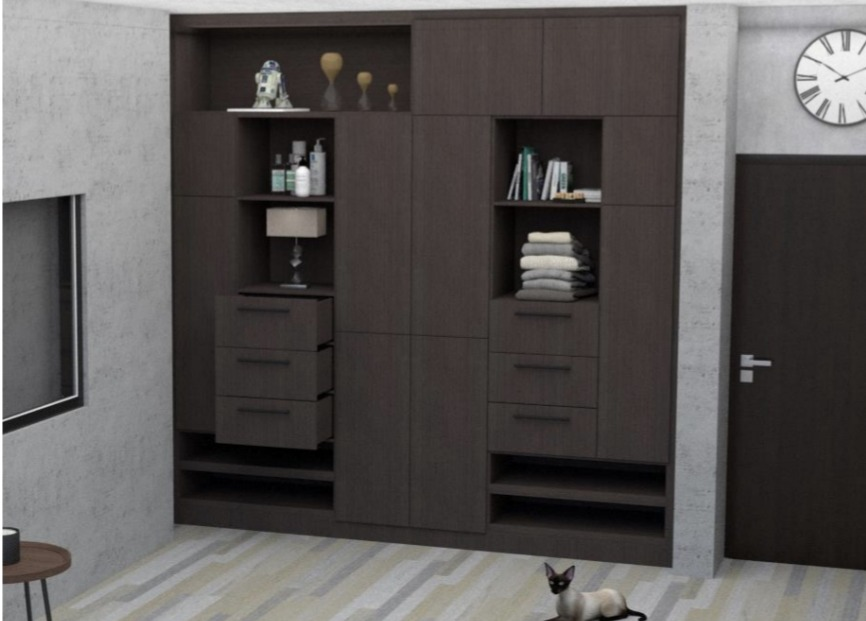

Ana Pau
Diseñadora Industrial & UX
Diseñadora Industrial & UX


Diseñé esta pieza pensando en el balance ideal: la elegancia de una oficina moderna y la funcionalidad que necesitas en el día a día. Usé tonos oscuros para darle ese toque sobrio y profesional que destaca en cualquier espacio de trabajo.